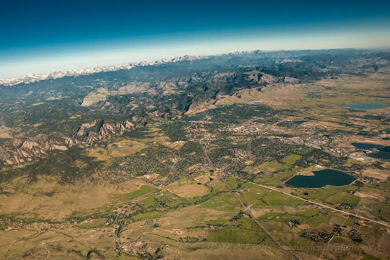

Longren Hawaii Newsletter #01 - 05.10.2024 ------------------------------ Hello friends and family, The summer has come and gone, and with it a good deal of change. For myself, I am happy to see the temperatures start to drop now. As well, I've gone and moved again, but am fortunate to be settled into a new home once more. At the end of June, I moved away from Hawaii. I had a great time seeing where I used to live for a little while as a kid. Being on a warm island was also welcome, especially after being in the Antarctic for so long. Though, while I know many of you may disagree, to me Hawaii is just a bit too warm. Throughout July, I bounced around to see family in Kansas and Germany, all the while gathering the things I have scattered across the world and looking for a car to buy. At the end of July, I drove across Kansas and into Colorado to settle down for the next year. Me with my Dad, Brother, and Uncle as I get my car packed to depart Kansas. (my Grandma) I made it safely and, besides being locked out of the new apartment initially, was able to move all my stuff into a cute apartment in north Boulder, Colorado. A key feature of the place: it has a wood-burning fireplace. My partner, Tasha, will be moving in as well this month when she returns from a winter in Antarctica. While the apartment is cozy enough for me, I think I have a bit more work to do before she arrives.  A photo of Boulder, Colorado taken from a weather balloon. (colleague of mine, P. Cullis) What has brought me back across another ocean this time, you ask? Well, Antarctica of course. And more so, I've taken a job at a place that has made me excited about science again. I'll talk all about what I'm doing in Colorado in the future, but if you want a sneak peak, I've been training as a science technician with the National Oceanic and Atmospheric Administration (NOAA). A year from now, I'll be heading to the South Pole to do things like launch weather balloons and collect air samples. But for the rest of this newsletter, I want to look back at the brief time that I was in Hawaii. And what better way to do that than for you to join me on a scenic flight around a few of the islands there. A map of my flight track around the islands. As you might know, I got my private pilot license a while back when I was in college in Hays, Kansas. I picked flying up again when I was in Hawaii. For my last flight before moving, I used up the remainder of my account balance on a few hours of scenic flying last June. Me flying. (flight instructor, I. Kurihara) While beautiful, flying around Hawaii can be extremely difficult. The Honolulu airport is one of the busiest around. With a population on the island of O'ahu of 1 million people and an annual passenger traffic of 21 million people last year, a bit of napkin math shows that about 5% of the people on the island are either coming or going. Every. Single. Day. I find that number to be a bit crazy. But hey, I guess a tropical island in the middle of the Pacific is a popular place to be. Thankfully, the scenic flight was a relaxed affair. Once out of the busy airspace, the only big challenge was avoiding the many clouds along the way. Here are some of the photos I took that day. The valley of Mānoa on O'ahu. .jpg) The volcano of Diamond Head on O'ahu. A lighthouse on the east coast of O'ahu. Flying across the ocean to Moloka'i. The cliffs on the north side of Moloka'i. A winding road on Lāna'i. Returning to the big city of Honolulu on O'ahu. That was quite the memorable day for me. It was the first time that I had flown myself across an ocean. Thank you for looking back on that day with me. I'll miss a lot about Hawaii. The people I met, the ocean, my motorbike, and the abundance of mangos, just to name a few things. On my old motorbike. (my partner, T. Griffin) Here's to the positives of change, such as being close to family, exciting scientific work, and sweater weather. And hey, I own a Subaru in Colorado, so I fit right in already. Wishing you well, Luke ------------------------------ ------------------------------ Previous newsletters can be found on my website. |